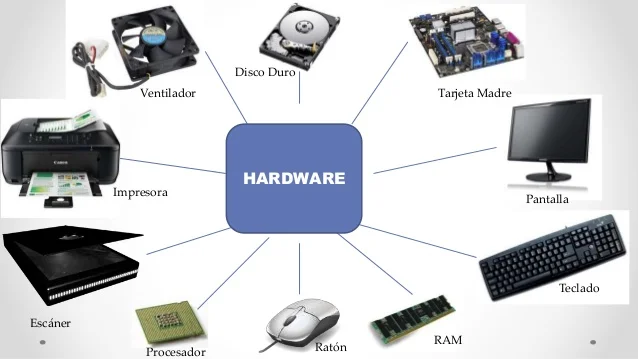
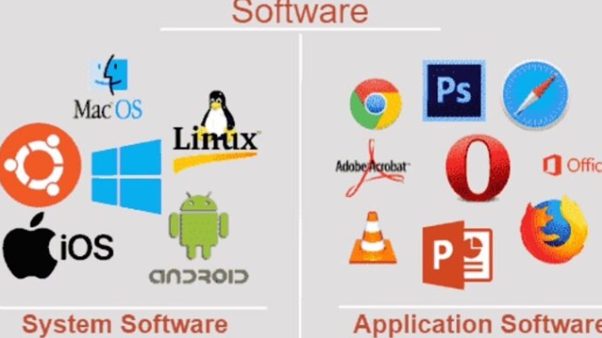

_
El curso IT Essentials proporciona una base sólida en hardware y software para aquellos interesados en el campo de la tecnología de la información. También se abordan conceptos de redes y seguridad, incluyendo la protección contra virus y malware.Esto incluye identificar fallas de hardware, solucionar problemas de conectividad de red y resolver conflictos de software. En resumen, IT Essentials ofrece una introducción completa a los aspectos fundamentales de hardware y software en tecnología de la información, preparando a los estudiantes para roles en soporte técnico, administración de sistemas y otras áreas relacionadas con la informática.
Se cubren aspectos básicos de hardware, incluyendo componentes internos de computadoras como procesadores, memoria RAM, discos duros, tarjetas madre, y unidades de almacenamiento.
Se exploran los sistemas operativos, incluyendo instalación, configuración y mantenimiento de sistemas como Windows y Linux.
También se abordan conceptos de redes y seguridad, incluyendo la protección contra virus y malware.
Se enseñan técnicas para diagnosticar y solucionar problemas comunes de hardware y software.
Esto incluye identificar fallas de hardware, solucionar problemas de conectividad de red y resolver conflictos de software.

Se cubren conceptos básicos de seguridad informática, como protección de datos, contraseñas seguras, y prácticas de seguridad en línea.

Se recomienda mantener actualizados los sistemas operativos y otros programas para evitar vulnerabilidades de seguridad y garantizar un rendimiento óptimo.

Se enfatiza la importancia de realizar copias de seguridad regulares de los datos importantes. Esto se hace para proteger contra la pérdida de datos debido a fallas de hardware, errores humanos o ataques cibernéticos.
 Optimización del rendimiento
Optimización del rendimiento
LSe ofrecen técnicas para mejorar el rendimiento de la computadora, como la desfragmentación del disco duro, la eliminación de programas innecesarios y la optimización de la configuración del sistema.
 Diagramas de topología
Diagramas de topología
Los diagramas de topología física ilustran la ubicación física de los dispositivos intermedios
 Tipos de redes
Tipos de redes
*Las redes domésticas pequeñas conectan algunas computadoras entre sí y con Internet
*Las oficinas pequeñas y las oficinas en el hogar permiten que una computadora dentro de una oficina en el hogar o una oficina remota se conecte a una red corporativa.
*Las redes medianas a grandes incluyen muchos lugares con cientos o miles de computadoras interconectadas.
*Redes mundiales: conecta cientos de millones de computadoras en todo el mundo, como Internet
*Shell= La interfaz de usuario que permite a los usuarios solicitar tareas específicas del equipo. Estas solicitudes se pueden realizar a través de las interfaces CLI o GUI.
*Kernel= Establece la comunicación entre el hardware y el software de una computadora y administra el uso de los recursos de hardware para cumplir los requisitos del software.
*Hardware- La parte física de una computadora, incluida la electrónica subyacente.
*Una GUI permite al usuario interactuar con el sistema utilizando un entorno de iconos gráficos, menús y ventanas.
*Una GUI es más fácil de usar y requiere menos conocimiento de la estructura de comandos subyacente que controla el sistema.
*Ejemplos de estos son: Windows, macOS, Linux KDE, Apple iOS y Android.
*Las GUI también pueden fallar, colapsar o simplemente no operar como se les indica. Por eso, se suele acceder a los dispositivos de red mediante una CLI.
El sistema operativo de PC permite al usuario hacer lo siguiente: Utilice un mouse para hacer selecciones y ejecutar programas. Introduzca texto y comandos de texto.

El sistema operativo de red basado en CLI permite a un técnico de red hacer lo siguiente:
*Utilice un teclado para ejecutar programas de red basados en la CLI.
*Utilice un teclado para introducir texto y comandos basados en texto.
*Vea resultados en un monitor.
*Consola – Puerto de administración física utilizado para acceder a un dispositivo con el fin de proporcionar mantenimiento, como realizar las configuraciones iniciales.
*Secure Shell (SSH) – Establece una conexión CLI remota segura a un dispositivo, a través de una interfaz virtual, a través de una red. (Nota: Este es el método recomendado para conectarse remotamente a un dispositivo.)
*Telnet – Establece una conexión CLI remota insegura a un dispositivo a través de la red. (Nota: La autenticación de usuario, las contraseñas y los comandos se envían por la red en texto simple.)

*Los programas de emulación de terminal se utilizan para conectarse a un dispositivo de red mediante un puerto de consola o mediante una conexión SSH/TelNet.
Hay varios programas de emulación terminal para elegir como PuTTY, Tera Term y SecureCRT.

Modo EXEC de usuario:
*Permite el acceso solamente a una cantidad limitada de comandos básicos de monitoreo.
*El modo EXEC de usuario se identifica porque el indicador de la CLI que finaliza con el símbolo >.

Privileged EXEC Mode:
*Permite el acceso a todos los comandos y funciones.
*Identificado por la solicitud de CLI que termina con el símbolo #

*Modo de configuración global: Se utiliza para acceder a las opciones de configuración del dispositivo

*Modo de configuración de línea: Se utiliza para configurar el acceso a la consola, SSH, Telnet o AUX

*Modo de configuración de interfaz Se utiliza para configurar un puerto de switch o una interfaz de router

Las redes varian tamaño y complejidad. los dispositvos deben ponerse de acuerdo sobre como comunicarse, deben tener:
*Remitente
*Receptor
*Medios
*Idioma comun
*Velocidad y entrega
*Confirmacion
*Se rigen por protocolos
*Reglas que seguiran
*Varian en funcion del protocolo
Deben estar de acuerdo e incluir lo siguiente:
*Codificacion: Proceso mediante la informacion se convierte en otra forma para la transmision.
*Decodificacion: Revierte el proceso anterior.
*Formato y encapsulamiento: Formato o estructura que hace que el mensaje se logre entregar.
*Tamaño del mensaje: Se refiere a la cantidad de datos enviados entre hosts en una red.
*Sincronizacion
*Opciones de entrega
*Control de flujo: Administra la velocidad de transmision, envio y entrega de los datos.
*Tiempo de espera: Administra el tiempo que espera un dispositivo en escuchar una respuesta.
*Metodo de acceso: Determina como alguien puede enviar un menaje, en este metodo existe la colision y el proactivo que evita la colision.
*Unidifusion: comunica para uno.
*Multidifusion: comunica para muchos.
*Difusion: comunica para todos.
Se usan para representar todos los dispositivos y es un circulo.
*Suite: Grupo de protocolos interrelacionados que son necesarios para realizar comunicacion y la solucion de un problema.
*Tipos de capa: Superior y inferior.
*Operan en capas de aplicacion, transporte e internet.
*Protocolos de Red
*Los protocolos mas comunes son Ethernet, WLAN y LAN
*Estandares abiertos: Interoperabilidad, competencia y empresarial.
*Estandares de internet:
*Sociedad de internet(ISOC): promueve el desarrollo y la evolucion de, internet en todo el mundo.
*Consejo de Arquitectura de internet(IAB): Es el que administra y desarrolla general los estandares de internet.
*(IETF): Desarrolla, actualiza y mantiene tecnologias de internet y TCP/IP.
*(IRTF): Investiga a largo plazo en relacion con los protocolos de internet y TCP/IP.
*(ICANN): Coordina la asignacion de nombres de dominio y asignacion de, informacion usada en TCP/IP.
*(IANA): Adiministra asignacion de dirrecciones IP, nombres de dominio y idestificadores.
*(IEEE): Avanza en innovacion tecnologica y elabpra estandares en una amplia gama de sectores, energia, servicios de salud
*telecomunicaciones y redes.
*(EIA): Estandares de cableado electrico, conectores y racks para montar equipos de red.
*(EIA): Estandares para equipos de radio, torres de telefonia movil, (VoIP) y comunicaciones satelitales.
*(ITU-T): Para la compresion de videos, (IPTV) y comunicaciones de banda ancha.
*Segmentacion del mensaje
*Secuencia
*Unidades de datos
*Tipos de IP: De origen y de destino.
*Tipos de IP: IPv4 y IPv6.
*Conexion fisica: Esencial para cualquier comunicación de red, puede ser cableada o inalámbrica.
*Nic: Conecta dispositivos a la red, pudiendo tener una o varias NIC para diferentes tipos de conexiones.
*Rendimiento: No todas las conexiones físicas ofrecen el mismo nivel de rendimiento, lo cual es importante al considerar la configuración de una red.
*Transporte de Bits: Mueve bits a través de medios de red.
*Trama de Datos: Acepta tramas completas y las codifica para transmisión.
*Encapsulación: Es el último paso antes de enviar los datos al dispositivo receptor.
*Componentes Físicos: Elementos materiales que forman parte de la red.
*Codificación: Proceso de convertir datos en señales transmisibles.
*Señalización: Métodos para transferir información a través de los medios de red.
*Latencia: Es el tiempo, retraso, para los datos de un punto a otro.
*Redimiento: Es la medida de transferencia de bits de medios de tiempo.
Es economico, facil de instalar, tiene baja resistencia al flujo de corriente electrica y puede haber mitigacion.>
Tipos:
*UTP: Sin blindaje.
*STP: Blindado.
*Coaxial: Con buena seguridad.
*Monomodo
*Modos multiples
*Redes Empresariales: Para cableado principal e interconexión.
*FTTH: Banda ancha siempre activa para hogares y pequeñas empresas.
*Redes de Larga Distancia: Conexión entre ciudades y países.
*Cable Submarino: Conexiones de alta velocidad en entornos transoceánicos hostiles.
*Transporte de Señales: Uso de frecuencias de radio o microondas para representar bits.
*Movilidad: Aumento de la movilidad con conexiones inalámbricas en crecimiento.
*Limitaciones: Área de cobertura limitada, susceptibilidad a interferencias, y desafíos de seguridad.
*WLAN de Medio Compartido: Solo permite la transmisión de un dispositivo a la vez, afectando el rendimiento.
Las WLAN requieren dispositivos como AP y NIC inalámbricos, y es crucial asegurar la compatibilidad y la interoperabilidad.
Además, es importante que los administradores establezcan políticas de seguridad para proteger la red de accesos no autorizados y daños.